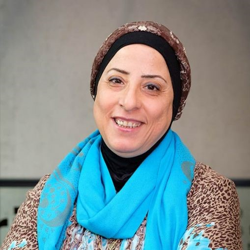
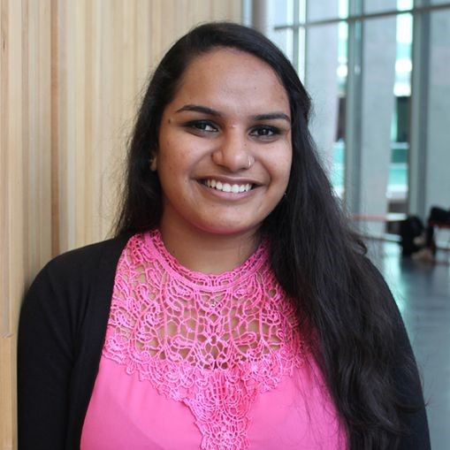
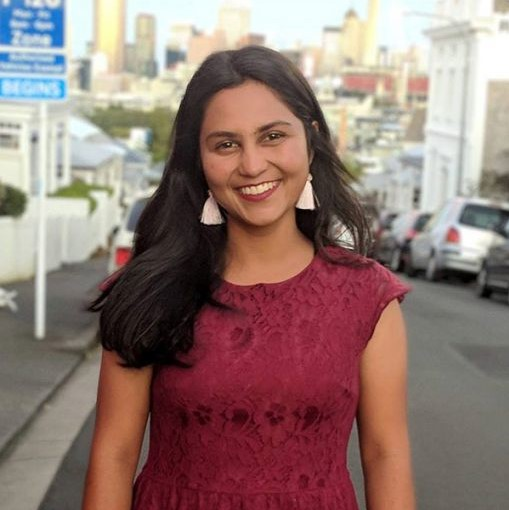

Profiles
|  | Sana AlyaseriComputer game content is usually created by a designer, but does this always have to be the case? That is the interesting topic Sana Alyaseri is exploring for her Doctor of Philosophy, which focuses on game content development. “We’re working on studying and investigating the use of algorithms inspired by nature to be hired in the procedural content generation of games to get good quality game content. “I’m interested in the enjoyment of the gamer, and for my PhD I’m investigating how to make this procedure a good experience for the gamer, focusing on the quality of the game content.” |
|  | Durgeshni ChandraIf you like logic and creativity architectural engineering is a great choice, says fourth-year student Durgeshni Chandra. “I’ve always had a keen interest in all types of engineering. Civil engineering particularly caught my attention, but I was more interested in the design aspects of civil engineering than the construction aspects. When AUT introduced architectural engineering that was the perfect choice for me. “I also believe that it’s very important to be mindful of environmental, economic and social factors when it comes to buildings. Buildings that are more sustainable and that consider these factors will be the buildings of the future. By studying architectural engineering, I feel that I’m doing my part to make this happen.” |
|  | Pushti ShahShe has always been passionate about technology and how it changes society, says Pushti Shah who is studying business and computing at AUT. “I want to understand how the changes in technology impact the way business is conducted. By studying business and computing I’ll be able to play my part in driving the change to build a better working world. “What I love most about my studies are all of the practical tasks – we’ve created a ticket booking application system, a human resource management database, an interactive website and even a sales pitch video. Through all of these assignments I can directly apply the theoretical aspects of my learning and understand how I can leverage them in the real world.” |